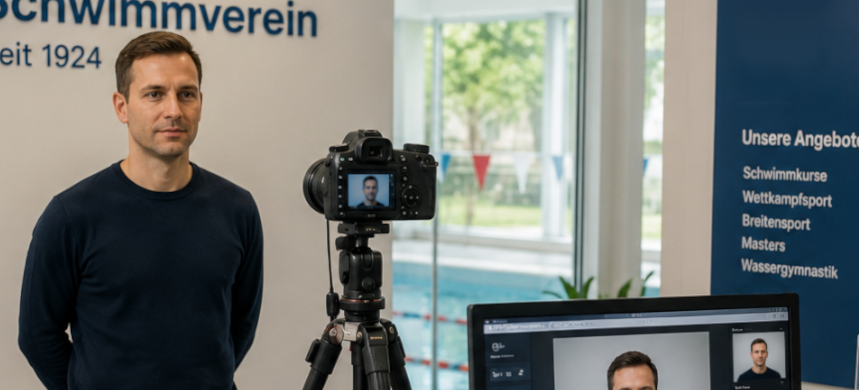

5,600 membership photos, one clear process.
A standalone C# application that connected member photos to records, supported capture beyond Wi-Fi range, and kept a high-volume production run moving under a fixed deadline.
Discuss a similar project
AI-generated illustration.
Project timeline · Jan 2025 – Apr 2025
A large production task with little room for mix-ups.
As the club modernized access control with turnstiles and RFID, it needed current photos for more than 5,000 membership IDs before the seasonal opening. Collecting and editing thousands of photos manually and matching them to member records would have created a significant bottleneck.
The club needed a faster process for capturing photos in a standardized format, assigning them to the correct members, and preparing them for card production. It established a dedicated capture station, while also needing a way to work outside Wi-Fi range.
I designed the process around the people at the capture station.
I took technical responsibility for the project and independently designed and developed a standalone C# and .NET WinForms application. Using AForge for native camera integration, the application gives staff a clear photo capture action and a member search by membership number or name. A dynamic table suggests matching members as staff type; after confirmation, the photo is associated with the selected record.
Capturing photos beyond Wi-Fi range.
For capture without access to the central MS SQL Server, staff could manually enter the person's ID and store photos locally. The locally stored data could later be synchronized with the server when a connection was available. This enabled capture during training sessions or external events without requiring members to visit the main office.
A repeatable flow that supported the full capturing run.
The solution enabled the organization to process the required photos and prepare 5,600 membership cards. Staff could concentrate on the people in front of them instead of file names and folders, while consistent handling reduced follow-up work.
This project shows how I respond to time pressure: simplify the workflow, focus on operational reliability, and deliver a tool that non-technical users can adopt quickly.